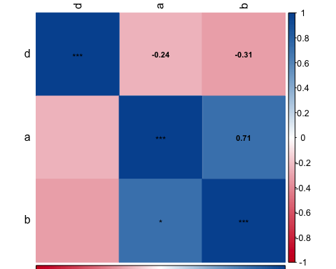
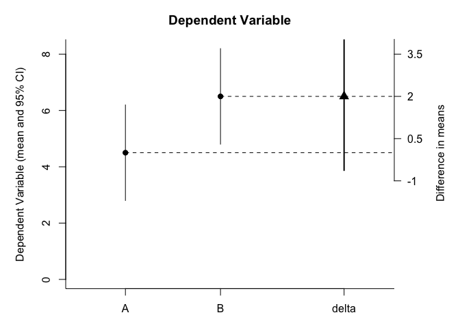

hcictools


The goal of hcictools is to make frequently recurring tasks in our work easier.
Installation
You can install the released version of hcictools from CRAN with:
# install.packages("remotes")
remotes::install_github("statisticsforsocialscience/hcictools")Package Contents
This is a package that contains helpful functions for survey data analysis. It is maintained by the Human-Computer Interaction Center at RWTH Aachen University.
Plotting Features
Correlation Plots
a <- c(1,2,3,8,4,5,6,7)
b <- c(4,5,6,7,3,8,9,10)
d <- c(4,2,5,2,5,2,1,5)
df <- data.frame(a = a, b = b, d = d)
cor.matrix.plot(df)
Confidence Interval Plots
It has a confidence interval plotting feature for indepedent sample tests.
plot_IS_meansCI(a, b)
auto-code scale
Automatically extract item orientation and create mean score of items that have a prefix.
newbfi <- psych::bfi %>% head(50) %>% auto_score("A")
#>
#> Adding scores for the A scale.
#>
#> ===============================================================
#>
#> ---------------------------------------------------Testing keys
#> Reliability analysis
#> raw_alpha std.alpha G6(smc) average_r S/N ase mean sd median_r
#> 0.22 0.32 0.49 0.074 0.48 0.093 18 2.1 0.082
#>
#> ------------------------------------------------Possible drops?
#> raw_alpha std.alpha G6(smc) average_r S/N alpha se
#> age 0.6401512 0.42544464 0.5372606 0.128992138 0.74047631 0.08165305
#> A4 0.2039064 0.14481064 0.3925876 0.032756976 0.16933167 0.08524789
#> A3 0.2014994 0.06413355 0.2829761 0.013520398 0.06852852 0.08112586
#> A2 0.1909211 0.20247520 0.3839429 0.048322292 0.25387950 0.09053765
#> A5 0.1579202 -0.05038375 0.1406805 -0.009686323 -0.04796699 0.08427459
#> A1- 0.1088703 0.59798114 0.6158001 0.229280612 1.48744546 0.10018208
#> var.r med.r
#> age 0.10907797 0.18432965
#> A4 0.12024568 0.02179296
#> A3 0.08593675 0.05261349
#> A2 0.08927665 0.02029358
#> A5 0.05296728 0.02029358
#> A1- 0.04319743 0.19797873
#>
#> ---------------------------------------------------Calculating scale
#> Call: psych::scoreItems(keys = keys, items = data_set, min = 1, max = 6)
#>
#> (Unstandardized) Alpha:
#> A
#> alpha 0.22
#>
#> Standard errors of unstandardized Alpha:
#> A
#> ASE 0.13
#>
#> Average item correlation:
#> A
#> average.r 0.044
#>
#> Median item correlation:
#> A
#> 0.27
#>
#> Guttman 6* reliability:
#> A
#> Lambda.6 0.32
#>
#> Signal/Noise based upon av.r :
#> A
#> Signal/Noise 0.27
#>
#> Scale intercorrelations corrected for attenuation
#> raw correlations below the diagonal, alpha on the diagonal
#> corrected correlations above the diagonal:
#> A
#> A 0.22
#>
#> Average adjusted correlations within and between scales (MIMS)
#> [1] 0.04
#>
#> Average adjusted item x scale correlations within and between scales (MIMT)
#> [1] 0.43
#>
#> In order to see the item by scale loadings and frequency counts of the data
#> print with the short option = FALSE
#> >>>>>>>>>>>>>>>>>>>>>>>>>>>>>>>>>>>>>>>>>>>>>>>>>>>>>>>>>>>
#> >>>>>>>>>>>>>>>>>>>>>>>>>>>>>>>>>>>>>>>>>>>>>>>>>>>>>>>>>>>